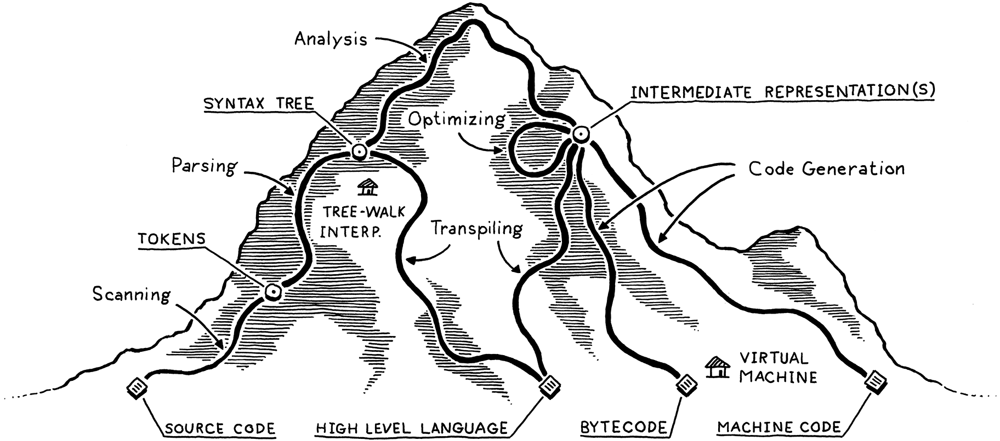
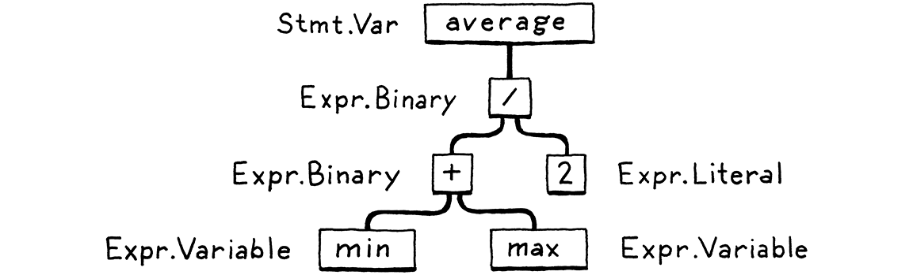
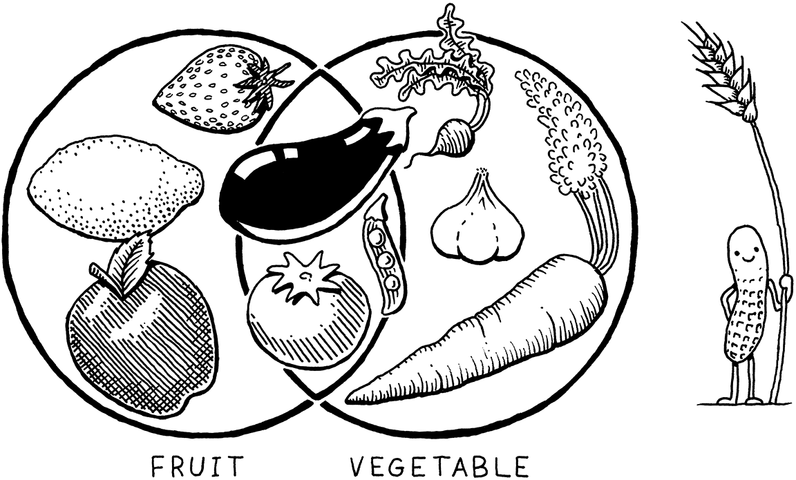
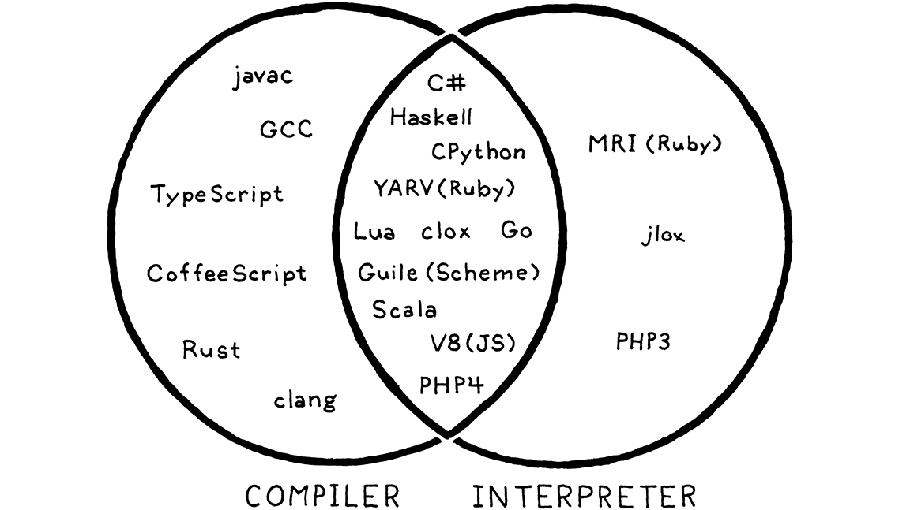

A Map of the Territory
This book is a work in progress!
×If you see a mistake, find something unclear, or have a suggestion, please let me know. To follow its progress, please join the mailing list:
(I post about once a month. Don’t worry, I won’t spam you.)
You must have a map, no matter how rough. Otherwise you wander all over the place. In The Lord of the Rings I never made anyone go farther than he could on a given day.
J. R. R. Tolkien
We don’t want to wander all over the place, so before we set off, let’s scan the territory charted by previous language implementers. It will help us understand where we are going and the alternate routes others have taken.
First, let me establish a shorthand. Much of this book is about a language’s implementation, which is distinct from the language itself in some sort of Platonic ideal form. Things like “stack”, “bytecode”, and “recursive descent”, are nuts and bolts one particular implementation might use. From the user’s perspective, as long as the resulting contraption faithfully follows the language’s specification, it’s all implementation detail.
We’re going to spend a lot of time on those details, so if I have to write “language implementation” every single time I mention them, I’ll wear my fingers off. Instead, I’ll use “language” to refer to either a language or an implementation of it, or both, unless the distinction matters.
2 . 1The Parts of a Language
Engineers have been building programming languages since the Dark Ages of computing. As soon as we could talk to computers, we discovered doing so was too hard, and we enlisted their help. I find it fascinating that even though today’s machines are literally a million times faster and have orders of magnitude more storage, the way we build programming languages is virtually unchanged.
Though the area explored by language designers is vast, the trails they’ve carved through it are few. Not every language takes the exact same path—some take a shortcut or two—but otherwise they are reassuringly similar, from Rear Admiral Grace Hopper’s first COBOL compiler all the way to some hot, new, transpile-to-JavaScript language whose “documentation” consists entirely of a single, poorly edited README in a Git repository somewhere.
I visualize the network of paths an implementation may choose as climbing a mountain. You start off at the bottom with the program as raw source text, literally just a string of characters. Each phase analyzes the program and transforms it to some higher-level representation where the semantics—what the author wants the computer to do—become more apparent.
Eventually we reach the peak. We have a bird’s-eye view of the user’s program and can see what their code means. We begin our descent down the other side of the mountain. We transform this highest-level representation down to successively lower-level forms to get closer and closer to something we know how to make the CPU actually execute.
Let’s trace through each of those trails and points of interest. Our journey begins on the left with the bare text of the user’s source code:
2 . 1 . 1Scanning
The first step is scanning, also known as lexing, or (if you’re trying to impress someone) lexical analysis. They all mean pretty much the same thing. I like “lexing” because it sounds like something an evil supervillain would do, but I’ll use “scanning” because it seems to be marginally more commonplace.
A scanner (or lexer) takes in the linear stream of characters and chunks
them together into a series of something more akin to “words”. In programming languages, each of these words is
called a token. Some tokens are single characters, like ( and ,. Others
may be several characters long, like numbers (123), string literals ("hi!"),
and identifiers (min).
Some characters in a source file don’t actually mean anything. Whitespace is often insignificant, and comments, by definition, are ignored by the language. The scanner usually discards these, leaving a clean sequence of meaningful tokens.
2 . 1 . 2Parsing
The next step is parsing. This is where our syntax gets a grammar—the ability to compose larger expressions and statements out of smaller parts. Did you ever diagram sentences in English class? If so, you’ve done what a parser does, except that English has thousands and thousands of “keywords” and an overflowing cornucopia of ambiguity. Programming languages are much simpler.
A parser takes the flat sequence of tokens and builds a tree structure that mirrors the nested nature of the grammar. These trees have a couple of different names—parse tree or abstract syntax tree—depending on how close to the bare syntactic structure of the source language they are. In practice, language hackers usually call them syntax trees, ASTs, or often just trees.
Parsing has a long, rich history in computer science that is closely tied to the artificial intelligence community. Many of the techniques used today to parse programming languages were originally conceived to parse human languages by AI researchers who were trying to get computers to talk to us.
It turns out human languages were too messy for the rigid grammars those parsers could handle, but they were a perfect fit for the simpler artificial grammars of programming languages. Alas, we flawed humans still manage to use those simple grammars incorrectly, so the parser’s job also includes letting us know when we do by reporting syntax errors.
2 . 1 . 3Static analysis
The first two stages are pretty similar across all implementations. Now, the individual characteristics of each language start coming into play. At this point, we know the syntactic structure of the code—things like which expressions are nested in which—but we don’t know much more than that.
In an expression like a + b, we know we are adding a and b, but we don’t
know what those names refer to. Are they local variables? Global? Where are they
defined?
The first bit of analysis that most languages do is called binding or resolution. For each identifier, we find out where that name is defined and wire the two together. This is where scope comes into play—the region of source code where a certain name can be used to refer to a certain declaration.
If the language is statically typed, this is when we
type check. Once we know where a and b are declared, we can also figure out
their types. Then if those types don’t support being added to each other, we
report a type error.
Take a deep breath. We have attained the summit of the mountain and a sweeping view of the user’s program. All this semantic insight that is visible to us from analysis needs to be stored somewhere. There are a few places we can squirrel it away:
-
Often, it gets stored right back as attributes on the syntax tree itself—extra fields in the nodes that aren’t initialized during parsing but get filled in later.
-
Other times, we may store data in a lookup table off to the side. Typically, the keys to this table are identifiers—names of variables and declarations. In that case, we call it a symbol table and the values it associates with each key tell us what that identifier refers to.
-
The most powerful bookkeeping tool is to transform the tree into an entirely new data structure that more directly expresses the semantics of the code. That’s the next section.
Everything up to this point is considered the front end of the implementation. You might guess everything after this is the back end, but no. Back in the days of yore when “front end” and “back end” were coined, compilers were much simpler. Later researchers invented new phases to stuff between the two halves. Rather than discard the old terms, William Wulf and company lumped those new phases into the charming but spatially paradoxical name middle end.
2 . 1 . 4Intermediate representations
You can think of the compiler as a pipeline where each stage’s job is to organize the data representing the user’s code in a way that makes the next stage simpler to implement. The front end of the pipeline is specific to the source language the program is written in. The back end is concerned with the final architecture where the program will run.
In the middle, the code may be stored in some intermediate representation (IR) that isn’t tightly tied to either the source or destination forms (hence “intermediate”). Instead, the IR acts as an interface between these two languages.
This lets you support multiple source languages and target platforms with less effort. Say you want to implement Pascal, C, and Fortran compilers, and you want to target x86, ARM, and, I dunno, SPARC. Normally, that means you’re signing up to write nine full compilers: Pascal→x86, C→ARM, and every other combination.
A shared intermediate representation reduces that dramatically. You write one front end for each source language that produces the IR. Then one back end for each target architecture. Now you can mix and match those to get every combination.
There’s another big reason we might want to transform the code into a form that makes the semantics more apparent . . .
2 . 1 . 5Optimization
Once we understand what the user’s program means, we are free to swap it out with a different program that has the same semantics but implements them more efficiently—we can optimize it.
A simple example is constant folding: if some expression always evaluates to the exact same value, we can do the evaluation at compile time and replace the code for the expression with its result. If the user typed in this:
pennyArea = 3.14159 * (0.75 / 2) * (0.75 / 2);
we could do all of that arithmetic in the compiler and change the code to:
pennyArea = 0.4417860938;
Optimization is a huge part of the programming language business. Many language hackers spend their entire careers here, squeezing every drop of performance they can out of their compilers to get their benchmarks a fraction of a percent faster. It can become a sort of obsession.
We’re mostly going to hop over that rathole in this book. Many successful languages have surprisingly few compile-time optimizations. For example, Lua and CPython generate relatively unoptimized code, and focus most of their performance effort on the runtime.
2 . 1 . 6Code generation
We have applied all of the optimizations we can think of to the user’s program. The last step is converting it to a form the machine can actually run. In other words, generating code (or code gen), where “code” here usually refers to the kind of primitive assembly-like instructions a CPU runs and not the kind of “source code” a human might want to read.
Finally, we are in the back end, descending the other side of the mountain. From here on out, our representation of the code becomes more and more primitive, like evolution run in reverse, as we get closer to something our simple-minded machine can understand.
We have a decision to make. Do we generate instructions for a real CPU or a virtual one? If we generate real machine code, we get an executable that the OS can load directly onto the chip. Native code is lightning fast, but generating it is a lot of work. Today’s architectures have piles of instructions, complex pipelines, and enough historical baggage to fill a 747’s luggage bay.
Speaking the chip’s language also means your compiler is tied to a specific architecture. If your compiler targets x86 machine code, it’s not going to run on an ARM device. All the way back in the ’60s, during the Cambrian explosion of computer architectures, that lack of portability was a real obstacle.
To get around that, hackers like Martin Richards and Niklaus Wirth, of BCPL and Pascal fame, respectively, made their compilers produce virtual machine code. Instead of instructions for some real chip, they produced code for a hypothetical, idealized machine. Wirth called this p-code for portable, but today, we generally call it bytecode because each instruction is often a single byte long.
These synthetic instructions are designed to map a little more closely to the language’s semantics, and not be so tied to the peculiarities of any one computer architecture and its accumulated historical cruft. You can think of it like a dense, binary encoding of the language’s low-level operations.
2 . 1 . 7Virtual machine
If your compiler produces bytecode, your work isn’t over once that’s done. Since there is no chip that speaks that bytecode, it’s your job to translate. Again, you have two options. You can write a little mini-compiler for each target architecture that converts the bytecode to native code for that machine. You still have to do work for each chip you support, but this last stage is pretty simple and you get to reuse the rest of the compiler pipeline across all of the machines you support. You’re basically using your bytecode as an intermediate representation.
Or you can write a virtual machine (VM), a program that emulates a hypothetical chip supporting your virtual architecture at runtime. Running bytecode in a VM is slower than translating it to native code ahead of time because every instruction must be simulated at runtime each time it executes. In return, you get simplicity and portability. Implement your VM in, say, C, and you can run your language on any platform that has a C compiler. This is how the second interpreter we build in this book works.
2 . 1 . 8Runtime
We have finally hammered the user’s program into a form that we can execute. The last step is running it. If we compiled it to machine code, we simply tell the operating system to load the executable and off it goes. If we compiled it to bytecode, we need to start up the VM and load the program into that.
In both cases, for all but the basest of low-level languages, we usually need some services that our language provides while the program is running. For example, if the language automatically manages memory, we need a garbage collector going in order to reclaim unused bits. If our language supports “instance of” tests so you can see what kind of object you have, then we need some representation to keep track of the type of each object during execution.
All of this stuff is going at runtime, so it’s called, appropriately, the runtime. In a fully compiled language, the code implementing the runtime gets inserted directly into the resulting executable. In, say, Go, each compiled application has its own copy of Go’s runtime directly embedded in it. If the language is run inside an interpreter or VM, then the runtime lives there. This is how most implementations of languages like Java, Python, and JavaScript work.
2 . 2Shortcuts and Alternate Routes
That’s the long path covering every possible phase you might implement. Many languages do walk the entire route, but there are a few shortcuts and alternate paths.
2 . 2 . 1Single-pass compilers
Some simple compilers interleave parsing, analysis, and code generation so that they produce output code directly in the parser, without ever allocating any syntax trees or other IRs. These single-pass compilers restrict the design of the language. You have no intermediate data structures to store global information about the program, and you don’t revisit any previously parsed part of the code. That means as soon as you see some expression, you need to know enough to correctly compile it.
Pascal and C were designed around this limitation. At the time, memory was so precious that a compiler might not even be able to hold an entire source file in memory, much less the whole program. This is why Pascal’s grammar requires type declarations to appear first in a block. It’s why in C you can’t call a function above the code that defines it unless you have an explicit forward declaration that tells the compiler what it needs to know to generate code for a call to the later function.
2 . 2 . 2Tree-walk interpreters
Some programming languages begin executing code right after parsing it to an AST (with maybe a bit of static analysis applied). To run the program, the interpreter traverses the syntax tree one branch and leaf at a time, evaluating each node as it goes.
This implementation style is common for student projects and little languages, but is not widely used for general-purpose languages since it tends to be slow. Some people use “interpreter” to mean only these kinds of implementations, but others define that word more generally, so I’ll use the inarguably explicit “tree-walk interpreter” to refer to these. Our first interpreter rolls this way.
2 . 2 . 3Transpilers
Writing a complete back end for a language can be a lot of work. If you have some existing generic IR to target, you could bolt your front end onto that. Otherwise, it seems like you’re stuck. But what if you treated some other source language as if it were an intermediate representation?
You write a front end for your language. Then, in the back end, instead of doing all the work to lower the semantics to some primitive target language, you produce a string of valid source code for some other language that’s about as high level as yours. Then, you use the existing compilation tools for that language as your escape route off the mountain and down to something you can execute.
They used to call this a source-to-source compiler or a transcompiler. After the rise of languages that compile to JavaScript in order to run in the browser, they’ve affected the hipster sobriquet transpiler.
While the first transcompiler translated one assembly language to another, today, most transpilers work on higher-level languages. After the viral spread of UNIX to machines various and sundry, there began a long tradition of compilers that produced C as their output language. C compilers were available everywhere UNIX was and produced efficient code, so targeting C was a good way to get your language running on a lot of architectures.
Web browsers are the “machines” of today, and their “machine code” is JavaScript, so these days it seems almost every language out there has a compiler that targets JS since that’s the main way to get your code running in a browser.
The front end—scanner and parser—of a transpiler looks like other compilers. Then, if the source language is only a simple syntactic skin over the target language, it may skip analysis entirely and go straight to outputting the analogous syntax in the destination language.
If the two languages are more semantically different, you’ll see more of the typical phases of a full compiler including analysis and possibly even optimization. Then, when it comes to code generation, instead of outputting some binary language like machine code, you produce a string of grammatically correct source (well, destination) code in the target language.
Either way, you then run that resulting code through the output language’s existing compilation pipeline, and you’re good to go.
2 . 2 . 4Just-in-time compilation
This last one is less a shortcut and more a dangerous alpine scramble best reserved for experts. The fastest way to execute code is by compiling it to machine code, but you might not know what architecture your end user’s machine supports. What to do?
You can do the same thing that the HotSpot JVM, Microsoft’s CLR, and most JavaScript interpreters do. On the end user’s machine, when the program is loaded—either from source in the case of JS, or platform-independent bytecode for the JVM and CLR—you compile it to native for the architecture their computer supports. Naturally enough, this is called just-in-time compilation. Most hackers just say “JIT”, pronounced like it rhymes with “fit”.
The most sophisticated JITs insert profiling hooks into the generated code to see which regions are most performance critical and what kind of data is flowing through them. Then, over time, they will automatically recompile those hot spots with more advanced optimizations.
2 . 3Compilers and Interpreters
Now that I’ve stuffed your head with a dictionary’s worth of programming language jargon, we can finally address a question that’s plagued coders since time immemorial: What’s the difference between a compiler and an interpreter?
It turns out this is like asking the difference between a fruit and a vegetable. That seems like a binary either-or choice, but actually “fruit” is a botanical term and “vegetable” is culinary. One does not strictly imply the negation of the other. There are fruits that aren’t vegetables (apples) and vegetables that aren’t fruits (carrots), but also edible plants that are both fruits and vegetables, like tomatoes.

So, back to languages:
-
Compiling is an implementation technique that involves translating a source language to some other—usually lower-level—form. When you generate bytecode or machine code, you are compiling. When you transpile to another high-level language, you are compiling too.
-
When we say a language implementation “is a compiler”, we mean it translates source code to some other form but doesn’t execute it. The user has to take the resulting output and run it themselves.
-
Conversely, when we say an implementation “is an interpreter”, we mean it takes in source code and executes it immediately. It runs programs “from source”.
Like apples and oranges, some implementations are clearly compilers and not interpreters. GCC and Clang take your C code and compile it to machine code. An end user runs that executable directly and may never even know which tool was used to compile it. So those are compilers for C.
In older versions of Matz’s canonical implementation of Ruby, the user ran Ruby from source. The implementation parsed it and executed it directly by traversing the syntax tree. No other translation occurred, either internally or in any user-visible form. So this was definitely an interpreter for Ruby.
But what of CPython? When you run your Python program using it, the code is parsed and converted to an internal bytecode format, which is then executed inside the VM. From the user’s perspective, this is clearly an interpreter—they run their program from source. But if you look under CPython’s scaly skin, you’ll see that there is definitely some compiling going on.
The answer is that it is both. CPython is an interpreter, and it has a compiler. In practice, most scripting languages work this way, as you can see:
That overlapping region in the center is where our second interpreter lives too, since it internally compiles to bytecode. So while this book is nominally about interpreters, we’ll cover some compilation too.
2 . 4Our Journey
That’s a lot to take in all at once. Don’t worry. This isn’t the chapter where you’re expected to understand all of these pieces and parts. I just want you to know that they are out there and roughly how they fit together.
This map should serve you well as you explore the territory beyond the guided path we take in this book. I want to leave you yearning to strike out on your own and wander all over that mountain.
But, for now, it’s time for our own journey to begin. Tighten your bootlaces, cinch up your pack, and come along. From here on out, all you need to focus on is the path in front of you.
Challenges
-
Pick an open source implementation of a language you like. Download the source code and poke around in it. Try to find the code that implements the scanner and parser. Are they handwritten, or generated using tools like Lex and Yacc? (
.lor.yfiles usually imply the latter.) -
Just-in-time compilation tends to be the fastest way to implement dynamically typed languages, but not all of them use it. What reasons are there to not JIT?
-
Most Lisp implementations that compile to C also contain an interpreter that lets them execute Lisp code on the fly as well. Why?